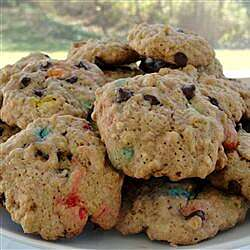

Cookies in a Jar

Description
This cookie in a jar mix has a littler bit of everything in it. A great gift idea!
By LINDA VAN HOUTEN
- Prep: 20 mins
- Total: 20 mins
- Servings: 12
- Yield: 2 1/2 dozen
Ingredients
- 1/2 cup white chocolate chips
- 1/2 cup crispy rice cereal
- 1 1/2 cups all-purpose flour
- 3/4 teaspoon baking soda
- 1/4 teaspoon baking powder
- 1/2 cup packed brown sugar
- 1/2 cup semisweet chocolate chips
- 1/2 cup rolled oats
- 1/2 cup white sugar
Steps
- In a 1 quart jar, layer the ingredients in the order listed. Pack down firmly after each addition
- Attach a tag with the followin instructions: Cookie in a Jar 1. Preheat the oven to 350 degrees F.2.In a large bowl, cream 1/2 cup margarine until light and fluffy. Mix in 1 egg and 2 tablespoons water. Add the entire contents of the jar, and stir until well blended. Drop by rounded spoonfuls onto an ungreased cookie sheet. 3.Bake for 10 to 12 minutes in preheated oven. Remove from baking sheets to cool on wire racks.